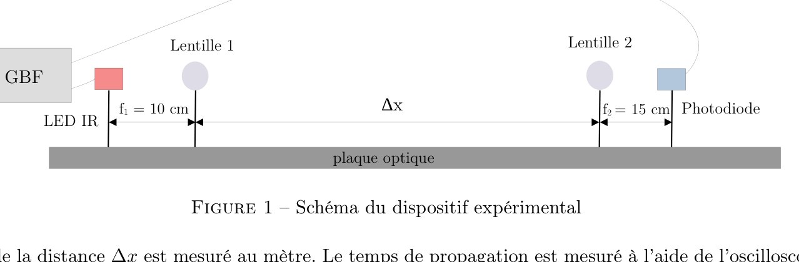
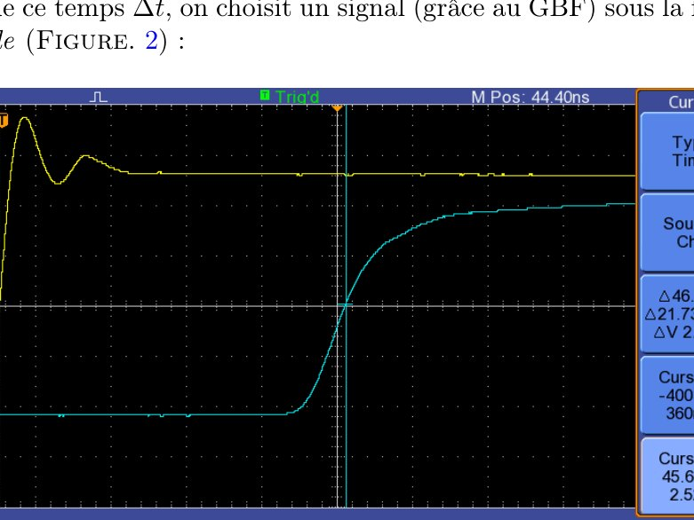
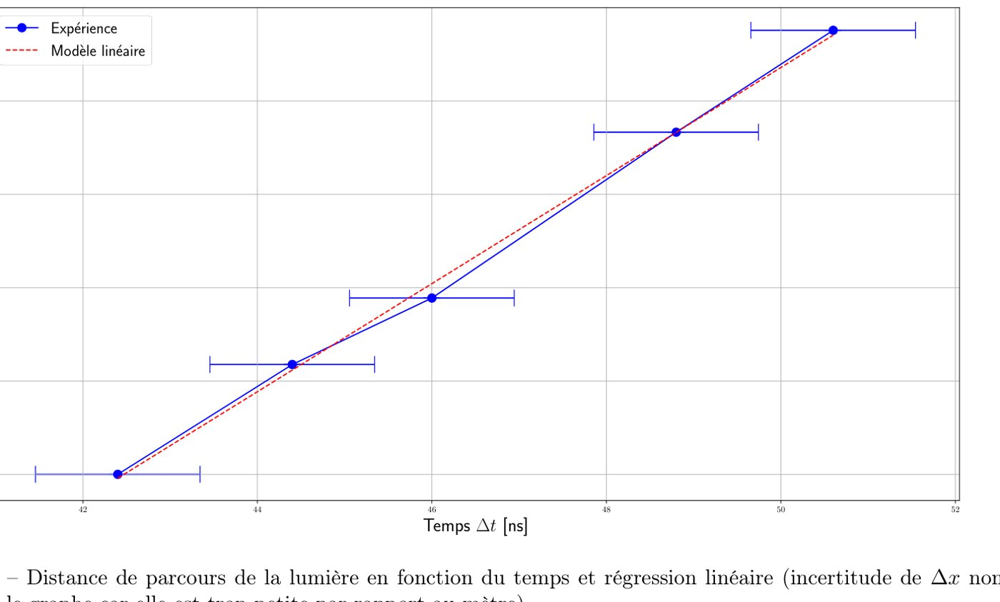
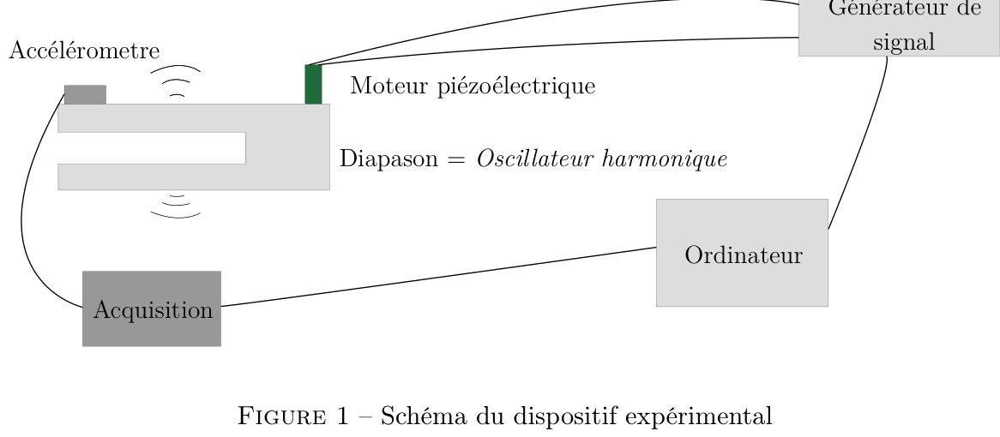
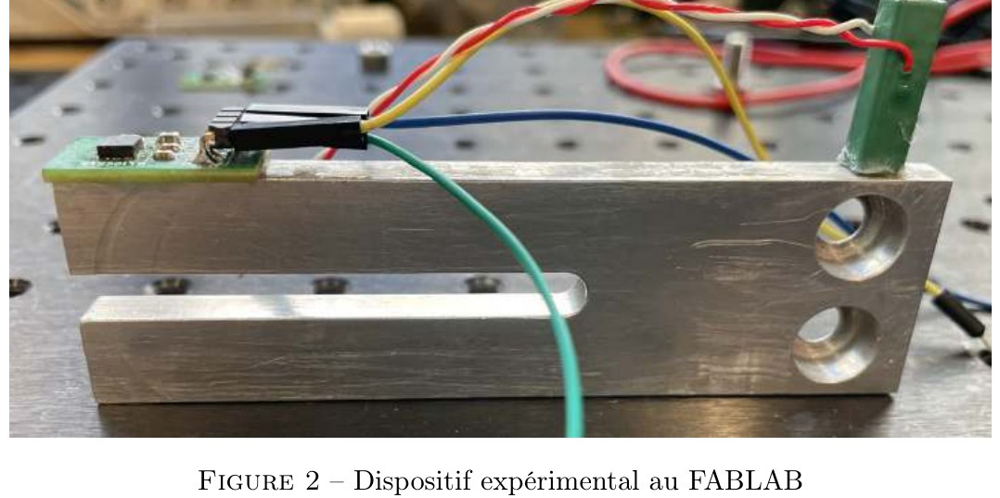
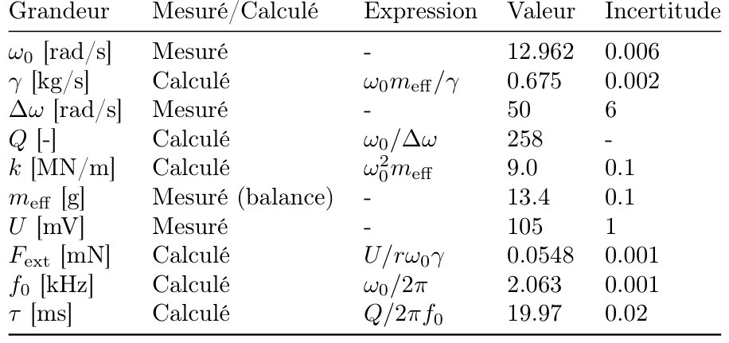

Lab projects · École Normale Supérieure, Paris · 2021–2022 · with F. Barbier-Chebbah
Time-of-Flight LIDAR and a Home-made AFM
InstrumentationUncertainty analysisCalibration

Summary
LIDAR. A near-infrared LED (870 nm) sends square pulses through two lenses to a photodiode; an oscilloscope measures the delay. This is exactly how the LIDAR sensors of mobile robots measure distance. A first measurement gave a speed three times too high: cable and electronics delays added a constant offset. We removed it by moving the optical plates and fitting the slope of distance vs time.
AFM. At the ENS Fablab we built an atomic force microscope from a tuning fork, a piezoelectric actuator and an accelerometer, calibrated it and measured how small an external force it can detect.
On the bench
Both projects are about making a measurement you can defend: choosing the signal shape to sharpen the time reading, focusing the beam to work over long distances, propagating uncertainties on every quantity, calibrating the accelerometer (2g step → 1 V), and checking that acquisition time exceeds the settling time of the resonator before drawing a Bode diagram.
Method & equations
Time of flight — speed and its uncertainty:
$$c=\frac{\Delta x}{\Delta t},\qquad \frac{U(c)}{c}=\sqrt{\left(\frac{U(\Delta x)}{\Delta x}\right)^2+\left(\frac{U(\Delta t)}{\Delta t}\right)^2}$$Fitting \(\Delta x=c\,\Delta t+b\) removes the offset \(b\) and gives \(c_{\text{exp}}=(2.89\pm0.12)\times10^{8}\ \mathrm{m\,s^{-1}}\), within 3.5 % of the reference value.
AFM — the tuning fork is a driven, damped oscillator; a tip–sample force \(F_{\text{in}}=AX+B\dot X\) shifts its resonance and quality factor:
$$\ddot X+\frac{\gamma}{m}\dot X+\frac{k}{m}X=\frac{F_{\text{ext}}}{m},\qquad \omega_0=\sqrt{k/m},\quad Q=\frac{\omega_0 m}{\gamma},\qquad \omega_0'^2=\frac{k-A}{m}$$Figures











